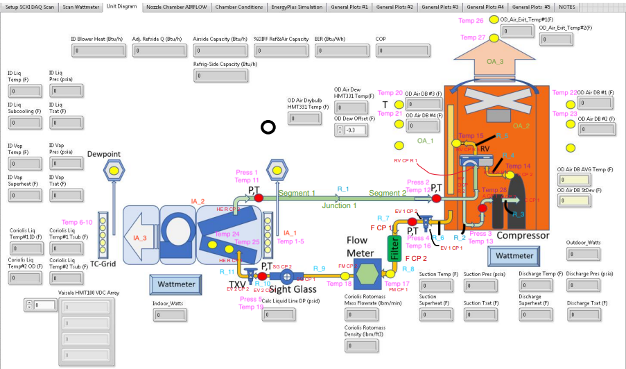

Warning
This model has not been updated since the last revision of the 223P ontology, and it may not pass validation. 223P was last updated on 2025-04-03 11:28:14. The model file was last updated on 2024-09-12 16:11:46
Heat Pump Laboratory (HPL)#
The HPL is a lab at NIST that consists of a bi-directional indoor and outdoor air system.
Schematic view#

Downloads#
Queries#
Description |
Query URL |
|---|---|
Find the downstream equipment for AHU1. |
Model Components#
Parent Class |
Class |
Instances |
|---|---|---|
34 |
||
8 |
||
3 |
||
3 |
||
3 |
||
3 |
||
2 |
||
1 |
||
1 |
||
10 |
||
9 |
||
20 |
||
15 |
||
15 |
||
1 |
||
52 |
||
6 |
Load and Validate Model#
This code uses the BuildingMOTIF library to load the 223P ontology and the model file into a temporary in-memory instance. It then validates the model against the ontology. If the model is invalid, it will print the validation report.
To run this code, you need to have Java installed on your system. If you do not have Java installed, you can remove the shacl_engine='topquadrant' parameter from the BuildingMOTIF constructor.
Be warned that without the shacl_engine='topquadrant' parameter, the validation process will be slower.
Note
BuildingMOTIF installation
To install the buildingmotif library, you can use the following command:
pip install 'buildingmotif[topquadrant] @ git+https://github.com/NREL/buildingmotif.git@develop'
If you do not have Java installed, you can use the following command to install the library:
pip install 'buildingmotif @ git+https://github.com/NREL/buildingmotif.git@develop'
from buildingmotif import BuildingMOTIF
from buildingmotif.dataclasses import Library, Model
import logging
# Create a BuildingMOTIF object. If you do not have Java installed, remove the "shacl_engine" parameter
bm = BuildingMOTIF('sqlite://', shacl_engine='topquadrant', log_level=logging.ERROR)
# load 223P library. We will load a recent copy from the models.open223.info
# git repository; later, we will load this from the location of the actual standard
s223 = Library.load(ontology_graph="https://github.com/open223/models.open223.info/raw/main/ontologies/223p.ttl")
# load the model into the BuildingMOTIF instance
model = Model.create("urn:NIST-HPL")
model.graph.parse("https://models.open223.info/NIST-HPL.ttl")
# validate the model against 223P ontology
ctx = model.validate([s223.get_shape_collection()], error_on_missing_imports=False)
# print the validation result
print(f"Model is valid: {ctx.valid}")
# if the model is invalid, print the validation report
if not ctx.valid:
print(ctx.report_string[:1000]) # first 1000 characters of the report
# BuildingMOTIF can also interpret the report to provide recommendations on fixes
for focus_node, diffs in ctx.get_reasons_with_severity("Violation").items():
if len(diffs) == 0:
continue
print(focus_node)
for diff in diffs:
print(" - " + diff.reason())
Model is valid: 0
@prefix ns1: <http://data.ashrae.org/standard223#> .
@prefix ns2: <http://qudt.org/schema/qudt/> .
@prefix sh: <http://www.w3.org/ns/shacl#> .
@prefix xsd: <http://www.w3.org/2001/XMLSchema#> .
[] a sh:ValidationReport ;
sh:conforms false ;
sh:result [ a sh:ValidationResult ;
sh:focusNode ns1:Numerical-LineNeutralVoltage ;
sh:resultMessage "Value must be an instance of ns2:QuantityKind" ;
sh:resultPath ns2:hasQuantityKind ;
sh:resultSeverity sh:Violation ;
sh:sourceConstraintComponent sh:ClassConstraintComponent ;
sh:sourceShape <urn:well-known/f5ff58fd> ;
sh:value <http://qudt.org/vocab/quantitykind/Voltage> ],
[ a sh:ValidationResult ;
sh:focusNode ns1:DCNegativeVoltage-12.0V ;
sh:resultMessage "Value must be an instance of ns2:Unit" ;
sh:resultPath ns2:hasUnit ;
sh:resultSeverity sh:Info ;
sh:sourceConstraintComponent sh:Cla
http://data.ashrae.org/standard223#Voltage-120V
- http://qudt.org/vocab/quantitykind/Voltage on http://data.ashrae.org/standard223#Voltage-120V needs to be a http://qudt.org/schema/qudt/QuantityKind
http://data.ashrae.org/standard223#LineLineVoltage-10000V
- http://qudt.org/vocab/quantitykind/Voltage on http://data.ashrae.org/standard223#LineLineVoltage-10000V needs to be a http://qudt.org/schema/qudt/QuantityKind
http://data.ashrae.org/standard223#DCPositiveVoltage-48.0V
- http://qudt.org/vocab/quantitykind/Voltage on http://data.ashrae.org/standard223#DCPositiveVoltage-48.0V needs to be a http://qudt.org/schema/qudt/QuantityKind
http://data.ashrae.org/standard223#DCNegativeVoltage-5.0V
- http://qudt.org/vocab/quantitykind/Voltage on http://data.ashrae.org/standard223#DCNegativeVoltage-5.0V needs to be a http://qudt.org/schema/qudt/QuantityKind
n708edf2240ab4b9fa3e635b94476f61ab231
- http://qudt.org/vocab/unit/PERCENT on n708edf2240ab4b9fa3e635b94476f61ab231 needs to be a http://qudt.org/schema/qudt/Unit
- http://qudt.org/vocab/quantitykind/VolumeFraction on n708edf2240ab4b9fa3e635b94476f61ab231 needs to be a http://qudt.org/schema/qudt/QuantityKind
http://example.org/HPL#Accumulator_CP_1_Temp
- http://qudt.org/vocab/unit/DEG_F on http://example.org/HPL#Accumulator_CP_1_Temp needs to be a http://qudt.org/schema/qudt/Unit
- http://qudt.org/vocab/quantitykind/Temperature on http://example.org/HPL#Accumulator_CP_1_Temp needs to be a http://qudt.org/schema/qudt/QuantityKind
http://data.ashrae.org/standard223#DCNegativeVoltage-48.0V
- http://qudt.org/vocab/quantitykind/Voltage on http://data.ashrae.org/standard223#DCNegativeVoltage-48.0V needs to be a http://qudt.org/schema/qudt/QuantityKind
http://data.ashrae.org/standard223#Voltage-277V
- http://qudt.org/vocab/quantitykind/Voltage on http://data.ashrae.org/standard223#Voltage-277V needs to be a http://qudt.org/schema/qudt/QuantityKind
http://example.org/HPL#HeatExchanger_R_CP_2_Temp
- http://qudt.org/vocab/unit/DEG_F on http://example.org/HPL#HeatExchanger_R_CP_2_Temp needs to be a http://qudt.org/schema/qudt/Unit
- http://qudt.org/vocab/quantitykind/Temperature on http://example.org/HPL#HeatExchanger_R_CP_2_Temp needs to be a http://qudt.org/schema/qudt/QuantityKind
http://example.org/HPL#OA_Connection_1_Temp_5
- http://qudt.org/vocab/unit/DEG_F on http://example.org/HPL#OA_Connection_1_Temp_5 needs to be a http://qudt.org/schema/qudt/Unit
- http://qudt.org/vocab/quantitykind/Temperature on http://example.org/HPL#OA_Connection_1_Temp_5 needs to be a http://qudt.org/schema/qudt/QuantityKind
n708edf2240ab4b9fa3e635b94476f61ab104
- http://qudt.org/vocab/unit/PERCENT on n708edf2240ab4b9fa3e635b94476f61ab104 needs to be a http://qudt.org/schema/qudt/Unit
- http://qudt.org/vocab/quantitykind/VolumeFraction on n708edf2240ab4b9fa3e635b94476f61ab104 needs to be a http://qudt.org/schema/qudt/QuantityKind
http://data.ashrae.org/standard223#Voltage-1900V
- http://qudt.org/vocab/quantitykind/Voltage on http://data.ashrae.org/standard223#Voltage-1900V needs to be a http://qudt.org/schema/qudt/QuantityKind
http://data.ashrae.org/standard223#DCPositiveVoltage-6.0V
- http://qudt.org/vocab/quantitykind/Voltage on http://data.ashrae.org/standard223#DCPositiveVoltage-6.0V needs to be a http://qudt.org/schema/qudt/QuantityKind
http://data.ashrae.org/standard223#Numerical-LineLineVoltage
- http://qudt.org/vocab/quantitykind/Voltage on http://data.ashrae.org/standard223#Numerical-LineLineVoltage needs to be a http://qudt.org/schema/qudt/QuantityKind
http://data.ashrae.org/standard223#Voltage-380V
- http://qudt.org/vocab/quantitykind/Voltage on http://data.ashrae.org/standard223#Voltage-380V needs to be a http://qudt.org/schema/qudt/QuantityKind
n708edf2240ab4b9fa3e635b94476f61ab271
- http://qudt.org/vocab/unit/PERCENT on n708edf2240ab4b9fa3e635b94476f61ab271 needs to be a http://qudt.org/schema/qudt/Unit
- http://qudt.org/vocab/quantitykind/VolumeFraction on n708edf2240ab4b9fa3e635b94476f61ab271 needs to be a http://qudt.org/schema/qudt/QuantityKind
http://data.ashrae.org/standard223#Voltage-2V
- http://qudt.org/vocab/quantitykind/Voltage on http://data.ashrae.org/standard223#Voltage-2V needs to be a http://qudt.org/schema/qudt/QuantityKind
http://data.ashrae.org/standard223#DCNegativeVoltage-12.0V
- http://qudt.org/vocab/quantitykind/Voltage on http://data.ashrae.org/standard223#DCNegativeVoltage-12.0V needs to be a http://qudt.org/schema/qudt/QuantityKind
http://example.org/HPL#FinnedHeatExchanger_A_ICP
- http://example.org/HPL#FinnedHeatExchanger_A_ICP expected 1 instance(s) of ns1:Connectable on path ns1:isConnectionPointOf
http://data.ashrae.org/standard223#Voltage-127V
- http://qudt.org/vocab/quantitykind/Voltage on http://data.ashrae.org/standard223#Voltage-127V needs to be a http://qudt.org/schema/qudt/QuantityKind
http://example.org/HPL#oa_temp
- http://qudt.org/vocab/quantitykind/Temperature on http://example.org/HPL#oa_temp needs to be a http://qudt.org/schema/qudt/QuantityKind
http://data.ashrae.org/standard223#Voltage-3810V
- http://qudt.org/vocab/quantitykind/Voltage on http://data.ashrae.org/standard223#Voltage-3810V needs to be a http://qudt.org/schema/qudt/QuantityKind
http://data.ashrae.org/standard223#LineNeutralVoltage-231V
- http://qudt.org/vocab/quantitykind/Voltage on http://data.ashrae.org/standard223#LineNeutralVoltage-231V needs to be a http://qudt.org/schema/qudt/QuantityKind
http://example.org/HPL#sa_temp
- http://qudt.org/vocab/quantitykind/Temperature on http://example.org/HPL#sa_temp needs to be a http://qudt.org/schema/qudt/QuantityKind
http://example.org/HPL#OA_Connection_1_Temp_2
- http://qudt.org/vocab/unit/DEG_F on http://example.org/HPL#OA_Connection_1_Temp_2 needs to be a http://qudt.org/schema/qudt/Unit
- http://qudt.org/vocab/quantitykind/Temperature on http://example.org/HPL#OA_Connection_1_Temp_2 needs to be a http://qudt.org/schema/qudt/QuantityKind
http://data.ashrae.org/standard223#Numerical-Frequency
- http://qudt.org/vocab/quantitykind/Frequency on http://data.ashrae.org/standard223#Numerical-Frequency needs to be a http://qudt.org/schema/qudt/QuantityKind
http://data.ashrae.org/standard223#Voltage-3V
- http://qudt.org/vocab/quantitykind/Voltage on http://data.ashrae.org/standard223#Voltage-3V needs to be a http://qudt.org/schema/qudt/QuantityKind
http://data.ashrae.org/standard223#Numerical-NumberOfElectricalPhases
- http://qudt.org/vocab/quantitykind/Dimensionless on http://data.ashrae.org/standard223#Numerical-NumberOfElectricalPhases needs to be a http://qudt.org/schema/qudt/QuantityKind
n708edf2240ab4b9fa3e635b94476f61ab206
- http://qudt.org/vocab/quantitykind/VolumeFraction on n708edf2240ab4b9fa3e635b94476f61ab206 needs to be a http://qudt.org/schema/qudt/QuantityKind
- http://qudt.org/vocab/unit/PERCENT on n708edf2240ab4b9fa3e635b94476f61ab206 needs to be a http://qudt.org/schema/qudt/Unit
http://data.ashrae.org/standard223#Voltage-480V
- http://qudt.org/vocab/quantitykind/Voltage on http://data.ashrae.org/standard223#Voltage-480V needs to be a http://qudt.org/schema/qudt/QuantityKind
http://data.ashrae.org/standard223#Voltage-PoE
- http://qudt.org/vocab/quantitykind/Voltage on http://data.ashrae.org/standard223#Voltage-PoE needs to be a http://qudt.org/schema/qudt/QuantityKind
n708edf2240ab4b9fa3e635b94476f61ab196
- http://qudt.org/vocab/quantitykind/VolumeFraction on n708edf2240ab4b9fa3e635b94476f61ab196 needs to be a http://qudt.org/schema/qudt/QuantityKind
- http://qudt.org/vocab/unit/PERCENT on n708edf2240ab4b9fa3e635b94476f61ab196 needs to be a http://qudt.org/schema/qudt/Unit
http://data.ashrae.org/standard223#Voltage-139V
- http://qudt.org/vocab/quantitykind/Voltage on http://data.ashrae.org/standard223#Voltage-139V needs to be a http://qudt.org/schema/qudt/QuantityKind
http://data.ashrae.org/standard223#LineNeutralVoltage-219V
- http://qudt.org/vocab/quantitykind/Voltage on http://data.ashrae.org/standard223#LineNeutralVoltage-219V needs to be a http://qudt.org/schema/qudt/QuantityKind
http://data.ashrae.org/standard223#Numerical-Voltage
- http://qudt.org/vocab/quantitykind/Voltage on http://data.ashrae.org/standard223#Numerical-Voltage needs to be a http://qudt.org/schema/qudt/QuantityKind
http://data.ashrae.org/standard223#LineNeutralVoltage-240V
- http://qudt.org/vocab/quantitykind/Voltage on http://data.ashrae.org/standard223#LineNeutralVoltage-240V needs to be a http://qudt.org/schema/qudt/QuantityKind
http://data.ashrae.org/standard223#LineNeutralVoltage-127V
- http://qudt.org/vocab/quantitykind/Voltage on http://data.ashrae.org/standard223#LineNeutralVoltage-127V needs to be a http://qudt.org/schema/qudt/QuantityKind
n708edf2240ab4b9fa3e635b94476f61ab54
- http://qudt.org/vocab/quantitykind/VolumeFraction on n708edf2240ab4b9fa3e635b94476f61ab54 needs to be a http://qudt.org/schema/qudt/QuantityKind
- http://qudt.org/vocab/unit/PERCENT on n708edf2240ab4b9fa3e635b94476f61ab54 needs to be a http://qudt.org/schema/qudt/Unit
http://example.org/HPL#Compressor_CP_2_Temp
- http://qudt.org/vocab/unit/DEG_F on http://example.org/HPL#Compressor_CP_2_Temp needs to be a http://qudt.org/schema/qudt/Unit
- http://qudt.org/vocab/quantitykind/Temperature on http://example.org/HPL#Compressor_CP_2_Temp needs to be a http://qudt.org/schema/qudt/QuantityKind
http://example.org/HPL#TC_1_Temp_2
- http://qudt.org/vocab/quantitykind/Temperature on http://example.org/HPL#TC_1_Temp_2 needs to be a http://qudt.org/schema/qudt/QuantityKind
- http://qudt.org/vocab/unit/DEG_F on http://example.org/HPL#TC_1_Temp_2 needs to be a http://qudt.org/schema/qudt/Unit
http://example.org/HPL#FinnedHeatExchanger_R_Temp_Sat
- http://qudt.org/vocab/quantitykind/Temperature on http://example.org/HPL#FinnedHeatExchanger_R_Temp_Sat needs to be a http://qudt.org/schema/qudt/QuantityKind
- http://qudt.org/vocab/unit/DEG_F on http://example.org/HPL#FinnedHeatExchanger_R_Temp_Sat needs to be a http://qudt.org/schema/qudt/Unit
http://data.ashrae.org/standard223#DCNegativeVoltage-24.0V
- http://qudt.org/vocab/quantitykind/Voltage on http://data.ashrae.org/standard223#DCNegativeVoltage-24.0V needs to be a http://qudt.org/schema/qudt/QuantityKind
http://data.ashrae.org/standard223#LineLineVoltage-6600V
- http://qudt.org/vocab/quantitykind/Voltage on http://data.ashrae.org/standard223#LineLineVoltage-6600V needs to be a http://qudt.org/schema/qudt/QuantityKind
http://data.ashrae.org/standard223#LineNeutralVoltage-3460V
- http://qudt.org/vocab/quantitykind/Voltage on http://data.ashrae.org/standard223#LineNeutralVoltage-3460V needs to be a http://qudt.org/schema/qudt/QuantityKind
http://data.ashrae.org/standard223#DCPositiveVoltage-3.0V
- http://qudt.org/vocab/quantitykind/Voltage on http://data.ashrae.org/standard223#DCPositiveVoltage-3.0V needs to be a http://qudt.org/schema/qudt/QuantityKind
http://data.ashrae.org/standard223#LineNeutralVoltage-2400V
- http://qudt.org/vocab/quantitykind/Voltage on http://data.ashrae.org/standard223#LineNeutralVoltage-2400V needs to be a http://qudt.org/schema/qudt/QuantityKind
http://data.ashrae.org/standard223#DCPositiveVoltage-190.0V
- http://qudt.org/vocab/quantitykind/Voltage on http://data.ashrae.org/standard223#DCPositiveVoltage-190.0V needs to be a http://qudt.org/schema/qudt/QuantityKind
http://data.ashrae.org/standard223#Numerical-LineNeutralVoltage
- http://qudt.org/vocab/quantitykind/Voltage on http://data.ashrae.org/standard223#Numerical-LineNeutralVoltage needs to be a http://qudt.org/schema/qudt/QuantityKind
http://data.ashrae.org/standard223#LineLineVoltage-240V
- http://qudt.org/vocab/quantitykind/Voltage on http://data.ashrae.org/standard223#LineLineVoltage-240V needs to be a http://qudt.org/schema/qudt/QuantityKind
n708edf2240ab4b9fa3e635b94476f61ab201
- http://qudt.org/vocab/quantitykind/Temperature on n708edf2240ab4b9fa3e635b94476f61ab201 needs to be a http://qudt.org/schema/qudt/QuantityKind
http://example.org/HPL#ExpansionValve_1_CP_2_Temp
- http://qudt.org/vocab/quantitykind/Temperature on http://example.org/HPL#ExpansionValve_1_CP_2_Temp needs to be a http://qudt.org/schema/qudt/QuantityKind
- http://qudt.org/vocab/unit/DEG_F on http://example.org/HPL#ExpansionValve_1_CP_2_Temp needs to be a http://qudt.org/schema/qudt/Unit
http://data.ashrae.org/standard223#LineNeutralVoltage-120V
- http://qudt.org/vocab/quantitykind/Voltage on http://data.ashrae.org/standard223#LineNeutralVoltage-120V needs to be a http://qudt.org/schema/qudt/QuantityKind
http://example.org/HPL#ExpansionValve_1_CP_2_Pres
- http://qudt.org/vocab/unit/PA on http://example.org/HPL#ExpansionValve_1_CP_2_Pres needs to be a http://qudt.org/schema/qudt/Unit
- http://qudt.org/vocab/quantitykind/Pressure on http://example.org/HPL#ExpansionValve_1_CP_2_Pres needs to be a http://qudt.org/schema/qudt/QuantityKind
http://data.ashrae.org/standard223#DCNegativeVoltage-2.5V
- http://qudt.org/vocab/quantitykind/Voltage on http://data.ashrae.org/standard223#DCNegativeVoltage-2.5V needs to be a http://qudt.org/schema/qudt/QuantityKind
http://example.org/HPL#TC_2_Temp_1
- http://qudt.org/vocab/quantitykind/Temperature on http://example.org/HPL#TC_2_Temp_1 needs to be a http://qudt.org/schema/qudt/QuantityKind
- http://qudt.org/vocab/unit/DEG_F on http://example.org/HPL#TC_2_Temp_1 needs to be a http://qudt.org/schema/qudt/Unit
http://data.ashrae.org/standard223#NumberOfElectricalPhases-ThreePhase
- http://qudt.org/vocab/quantitykind/Dimensionless on http://data.ashrae.org/standard223#NumberOfElectricalPhases-ThreePhase needs to be a http://qudt.org/schema/qudt/QuantityKind
http://example.org/HPL#sa_flow
- http://qudt.org/vocab/quantitykind/VolumeFlowRate on http://example.org/HPL#sa_flow needs to be a http://qudt.org/schema/qudt/QuantityKind
http://example.org/HPL#SightGlass_CP_2_Temp
- http://qudt.org/vocab/unit/DEG_F on http://example.org/HPL#SightGlass_CP_2_Temp needs to be a http://qudt.org/schema/qudt/Unit
- http://qudt.org/vocab/quantitykind/Temperature on http://example.org/HPL#SightGlass_CP_2_Temp needs to be a http://qudt.org/schema/qudt/QuantityKind
n708edf2240ab4b9fa3e635b94476f61ab48
- http://qudt.org/vocab/quantitykind/VolumeFraction on n708edf2240ab4b9fa3e635b94476f61ab48 needs to be a http://qudt.org/schema/qudt/QuantityKind
- http://qudt.org/vocab/unit/PERCENT on n708edf2240ab4b9fa3e635b94476f61ab48 needs to be a http://qudt.org/schema/qudt/Unit
n708edf2240ab4b9fa3e635b94476f61ab95
- http://qudt.org/vocab/quantitykind/VolumeFraction on n708edf2240ab4b9fa3e635b94476f61ab95 needs to be a http://qudt.org/schema/qudt/QuantityKind
- http://qudt.org/vocab/unit/PERCENT on n708edf2240ab4b9fa3e635b94476f61ab95 needs to be a http://qudt.org/schema/qudt/Unit
n708edf2240ab4b9fa3e635b94476f61ab22
- http://qudt.org/vocab/unit/PERCENT on n708edf2240ab4b9fa3e635b94476f61ab22 needs to be a http://qudt.org/schema/qudt/Unit
- http://qudt.org/vocab/quantitykind/VolumeFraction on n708edf2240ab4b9fa3e635b94476f61ab22 needs to be a http://qudt.org/schema/qudt/QuantityKind
http://example.org/HPL#Compressor_CP_2_Pres
- http://qudt.org/vocab/quantitykind/Pressure on http://example.org/HPL#Compressor_CP_2_Pres needs to be a http://qudt.org/schema/qudt/QuantityKind
- http://qudt.org/vocab/unit/PA on http://example.org/HPL#Compressor_CP_2_Pres needs to be a http://qudt.org/schema/qudt/Unit
http://example.org/HPL#HeatExchanger_Temp_2
- http://qudt.org/vocab/unit/DEG_F on http://example.org/HPL#HeatExchanger_Temp_2 needs to be a http://qudt.org/schema/qudt/Unit
- http://qudt.org/vocab/quantitykind/Temperature on http://example.org/HPL#HeatExchanger_Temp_2 needs to be a http://qudt.org/schema/qudt/QuantityKind
http://example.org/HPL#TC_1_Temp_3
- http://qudt.org/vocab/unit/DEG_F on http://example.org/HPL#TC_1_Temp_3 needs to be a http://qudt.org/schema/qudt/Unit
- http://qudt.org/vocab/quantitykind/Temperature on http://example.org/HPL#TC_1_Temp_3 needs to be a http://qudt.org/schema/qudt/QuantityKind
n708edf2240ab4b9fa3e635b94476f61ab364
- http://qudt.org/vocab/unit/PERCENT on n708edf2240ab4b9fa3e635b94476f61ab364 needs to be a http://qudt.org/schema/qudt/Unit
- http://qudt.org/vocab/quantitykind/VolumeFraction on n708edf2240ab4b9fa3e635b94476f61ab364 needs to be a http://qudt.org/schema/qudt/QuantityKind
http://data.ashrae.org/standard223#Voltage-2400V
- http://qudt.org/vocab/quantitykind/Voltage on http://data.ashrae.org/standard223#Voltage-2400V needs to be a http://qudt.org/schema/qudt/QuantityKind
n708edf2240ab4b9fa3e635b94476f61ab132
- http://qudt.org/vocab/unit/PERCENT on n708edf2240ab4b9fa3e635b94476f61ab132 needs to be a http://qudt.org/schema/qudt/Unit
- http://qudt.org/vocab/quantitykind/VolumeFraction on n708edf2240ab4b9fa3e635b94476f61ab132 needs to be a http://qudt.org/schema/qudt/QuantityKind
n708edf2240ab4b9fa3e635b94476f61ab279
- http://qudt.org/vocab/unit/PERCENT on n708edf2240ab4b9fa3e635b94476f61ab279 needs to be a http://qudt.org/schema/qudt/Unit
- http://qudt.org/vocab/quantitykind/VolumeFraction on n708edf2240ab4b9fa3e635b94476f61ab279 needs to be a http://qudt.org/schema/qudt/QuantityKind
http://data.ashrae.org/standard223#Voltage-6V
- http://qudt.org/vocab/quantitykind/Voltage on http://data.ashrae.org/standard223#Voltage-6V needs to be a http://qudt.org/schema/qudt/QuantityKind
http://example.org/HPL#id_power
- http://qudt.org/vocab/quantitykind/Power on http://example.org/HPL#id_power needs to be a http://qudt.org/schema/qudt/QuantityKind
http://data.ashrae.org/standard223#Voltage-219V
- http://qudt.org/vocab/quantitykind/Voltage on http://data.ashrae.org/standard223#Voltage-219V needs to be a http://qudt.org/schema/qudt/QuantityKind
http://example.org/HPL#OA_Connection_1_Temp_4
- http://qudt.org/vocab/quantitykind/Temperature on http://example.org/HPL#OA_Connection_1_Temp_4 needs to be a http://qudt.org/schema/qudt/QuantityKind
- http://qudt.org/vocab/unit/DEG_F on http://example.org/HPL#OA_Connection_1_Temp_4 needs to be a http://qudt.org/schema/qudt/Unit
http://example.org/HPL#OA_Connection_1_Temp_6
- http://qudt.org/vocab/unit/DEG_F on http://example.org/HPL#OA_Connection_1_Temp_6 needs to be a http://qudt.org/schema/qudt/Unit
- http://qudt.org/vocab/quantitykind/Temperature on http://example.org/HPL#OA_Connection_1_Temp_6 needs to be a http://qudt.org/schema/qudt/QuantityKind
http://data.ashrae.org/standard223#LineLineVoltage-6000V
- http://qudt.org/vocab/quantitykind/Voltage on http://data.ashrae.org/standard223#LineLineVoltage-6000V needs to be a http://qudt.org/schema/qudt/QuantityKind
http://data.ashrae.org/standard223#Frequency-50Hz
- http://qudt.org/vocab/quantitykind/Frequency on http://data.ashrae.org/standard223#Frequency-50Hz needs to be a http://qudt.org/schema/qudt/QuantityKind
http://data.ashrae.org/standard223#LineNeutralVoltage-347V
- http://qudt.org/vocab/quantitykind/Voltage on http://data.ashrae.org/standard223#LineNeutralVoltage-347V needs to be a http://qudt.org/schema/qudt/QuantityKind
http://data.ashrae.org/standard223#Voltage-48V
- http://qudt.org/vocab/quantitykind/Voltage on http://data.ashrae.org/standard223#Voltage-48V needs to be a http://qudt.org/schema/qudt/QuantityKind
http://example.org/HPL#HeatExchanger_Temp_1
- http://qudt.org/vocab/unit/DEG_F on http://example.org/HPL#HeatExchanger_Temp_1 needs to be a http://qudt.org/schema/qudt/Unit
- http://qudt.org/vocab/quantitykind/Temperature on http://example.org/HPL#HeatExchanger_Temp_1 needs to be a http://qudt.org/schema/qudt/QuantityKind
http://data.ashrae.org/standard223#DCNegativeVoltage-6.0V
- http://qudt.org/vocab/quantitykind/Voltage on http://data.ashrae.org/standard223#DCNegativeVoltage-6.0V needs to be a http://qudt.org/schema/qudt/QuantityKind
http://example.org/HPL#ExpansionValve_1_CP_2_Temp_Sat
- http://qudt.org/vocab/quantitykind/Temperature on http://example.org/HPL#ExpansionValve_1_CP_2_Temp_Sat needs to be a http://qudt.org/schema/qudt/QuantityKind
- http://qudt.org/vocab/unit/DEG_F on http://example.org/HPL#ExpansionValve_1_CP_2_Temp_Sat needs to be a http://qudt.org/schema/qudt/Unit
http://data.ashrae.org/standard223#Voltage-10000V
- http://qudt.org/vocab/quantitykind/Voltage on http://data.ashrae.org/standard223#Voltage-10000V needs to be a http://qudt.org/schema/qudt/QuantityKind
http://example.org/HPL#TC_2_Temp_5
- http://qudt.org/vocab/unit/DEG_F on http://example.org/HPL#TC_2_Temp_5 needs to be a http://qudt.org/schema/qudt/Unit
- http://qudt.org/vocab/quantitykind/Temperature on http://example.org/HPL#TC_2_Temp_5 needs to be a http://qudt.org/schema/qudt/QuantityKind
http://data.ashrae.org/standard223#Voltage-5770V
- http://qudt.org/vocab/quantitykind/Voltage on http://data.ashrae.org/standard223#Voltage-5770V needs to be a http://qudt.org/schema/qudt/QuantityKind
n708edf2240ab4b9fa3e635b94476f61ab315
- http://qudt.org/vocab/quantitykind/VolumeFraction on n708edf2240ab4b9fa3e635b94476f61ab315 needs to be a http://qudt.org/schema/qudt/QuantityKind
- http://qudt.org/vocab/unit/PERCENT on n708edf2240ab4b9fa3e635b94476f61ab315 needs to be a http://qudt.org/schema/qudt/Unit
http://example.org/HPL#TC_2_Temp_4
- http://qudt.org/vocab/unit/DEG_F on http://example.org/HPL#TC_2_Temp_4 needs to be a http://qudt.org/schema/qudt/Unit
- http://qudt.org/vocab/quantitykind/Temperature on http://example.org/HPL#TC_2_Temp_4 needs to be a http://qudt.org/schema/qudt/QuantityKind
http://data.ashrae.org/standard223#LineLineVoltage-3000V
- http://qudt.org/vocab/quantitykind/Voltage on http://data.ashrae.org/standard223#LineLineVoltage-3000V needs to be a http://qudt.org/schema/qudt/QuantityKind
http://data.ashrae.org/standard223#Voltage-208V
- http://qudt.org/vocab/quantitykind/Voltage on http://data.ashrae.org/standard223#Voltage-208V needs to be a http://qudt.org/schema/qudt/QuantityKind
http://data.ashrae.org/standard223#LineLineVoltage-208V
- http://qudt.org/vocab/quantitykind/Voltage on http://data.ashrae.org/standard223#LineLineVoltage-208V needs to be a http://qudt.org/schema/qudt/QuantityKind
http://data.ashrae.org/standard223#DCPositiveVoltage-5.0V
- http://qudt.org/vocab/quantitykind/Voltage on http://data.ashrae.org/standard223#DCPositiveVoltage-5.0V needs to be a http://qudt.org/schema/qudt/QuantityKind
http://data.ashrae.org/standard223#DCPositiveVoltage-380.0V
- http://qudt.org/vocab/quantitykind/Voltage on http://data.ashrae.org/standard223#DCPositiveVoltage-380.0V needs to be a http://qudt.org/schema/qudt/QuantityKind
http://data.ashrae.org/standard223#EnumerationKind-Numerical
- http://qudt.org/vocab/quantitykind/Unknown on http://data.ashrae.org/standard223#EnumerationKind-Numerical needs to be a http://qudt.org/schema/qudt/QuantityKind
http://example.org/HPL#Compressor_Temp
- http://qudt.org/vocab/unit/DEG_F on http://example.org/HPL#Compressor_Temp needs to be a http://qudt.org/schema/qudt/Unit
- http://qudt.org/vocab/quantitykind/Temperature on http://example.org/HPL#Compressor_Temp needs to be a http://qudt.org/schema/qudt/QuantityKind
http://data.ashrae.org/standard223#DCPositiveVoltage-24.0V
- http://qudt.org/vocab/quantitykind/Voltage on http://data.ashrae.org/standard223#DCPositiveVoltage-24.0V needs to be a http://qudt.org/schema/qudt/QuantityKind
http://data.ashrae.org/standard223#Voltage-400V
- http://qudt.org/vocab/quantitykind/Voltage on http://data.ashrae.org/standard223#Voltage-400V needs to be a http://qudt.org/schema/qudt/QuantityKind
http://data.ashrae.org/standard223#Voltage-1730V
- http://qudt.org/vocab/quantitykind/Voltage on http://data.ashrae.org/standard223#Voltage-1730V needs to be a http://qudt.org/schema/qudt/QuantityKind
http://example.org/HPL#OA_Connection_1_Temp_3
- http://qudt.org/vocab/quantitykind/Temperature on http://example.org/HPL#OA_Connection_1_Temp_3 needs to be a http://qudt.org/schema/qudt/QuantityKind
- http://qudt.org/vocab/unit/DEG_F on http://example.org/HPL#OA_Connection_1_Temp_3 needs to be a http://qudt.org/schema/qudt/Unit
http://example.org/HPL#OA_Connection_3_Temp_2
- http://qudt.org/vocab/unit/DEG_F on http://example.org/HPL#OA_Connection_3_Temp_2 needs to be a http://qudt.org/schema/qudt/Unit
- http://qudt.org/vocab/quantitykind/Temperature on http://example.org/HPL#OA_Connection_3_Temp_2 needs to be a http://qudt.org/schema/qudt/QuantityKind
http://example.org/HPL#FinnedHeatExchanger_R_CP_1
- http://example.org/HPL#FinnedHeatExchanger_R_CP_1 expected 1 instance(s) of ns1:Connectable on path ns1:isConnectionPointOf
http://data.ashrae.org/standard223#DCVoltage-DCPositiveVoltage
- http://qudt.org/vocab/quantitykind/Voltage on http://data.ashrae.org/standard223#DCVoltage-DCPositiveVoltage needs to be a http://qudt.org/schema/qudt/QuantityKind
http://data.ashrae.org/standard223#DCVoltage-DCNegativeVoltage
- http://qudt.org/vocab/quantitykind/Voltage on http://data.ashrae.org/standard223#DCVoltage-DCNegativeVoltage needs to be a http://qudt.org/schema/qudt/QuantityKind
http://example.org/HPL#FinnedHeatExchanger_R_Pres
- http://qudt.org/vocab/quantitykind/Pressure on http://example.org/HPL#FinnedHeatExchanger_R_Pres needs to be a http://qudt.org/schema/qudt/QuantityKind
- http://qudt.org/vocab/unit/PA on http://example.org/HPL#FinnedHeatExchanger_R_Pres needs to be a http://qudt.org/schema/qudt/Unit
http://example.org/HPL#R_Connection_9_Temp
- http://qudt.org/vocab/quantitykind/Temperature on http://example.org/HPL#R_Connection_9_Temp needs to be a http://qudt.org/schema/qudt/QuantityKind
- http://qudt.org/vocab/unit/DEG_F on http://example.org/HPL#R_Connection_9_Temp needs to be a http://qudt.org/schema/qudt/Unit
http://data.ashrae.org/standard223#Voltage-5V
- http://qudt.org/vocab/quantitykind/Voltage on http://data.ashrae.org/standard223#Voltage-5V needs to be a http://qudt.org/schema/qudt/QuantityKind
http://example.org/HPL#HeatExchanger_R_CP_2_Temp_Sat
- http://qudt.org/vocab/unit/DEG_F on http://example.org/HPL#HeatExchanger_R_CP_2_Temp_Sat needs to be a http://qudt.org/schema/qudt/Unit
- http://qudt.org/vocab/quantitykind/Temperature on http://example.org/HPL#HeatExchanger_R_CP_2_Temp_Sat needs to be a http://qudt.org/schema/qudt/QuantityKind
http://data.ashrae.org/standard223#Voltage-12V
- http://qudt.org/vocab/quantitykind/Voltage on http://data.ashrae.org/standard223#Voltage-12V needs to be a http://qudt.org/schema/qudt/QuantityKind
n708edf2240ab4b9fa3e635b94476f61ab134
- http://qudt.org/vocab/quantitykind/VolumeFraction on n708edf2240ab4b9fa3e635b94476f61ab134 needs to be a http://qudt.org/schema/qudt/QuantityKind
- http://qudt.org/vocab/unit/PERCENT on n708edf2240ab4b9fa3e635b94476f61ab134 needs to be a http://qudt.org/schema/qudt/Unit
n708edf2240ab4b9fa3e635b94476f61ab27
- http://qudt.org/vocab/quantitykind/Temperature on n708edf2240ab4b9fa3e635b94476f61ab27 needs to be a http://qudt.org/schema/qudt/QuantityKind
n708edf2240ab4b9fa3e635b94476f61ab164
- http://qudt.org/vocab/quantitykind/VolumeFraction on n708edf2240ab4b9fa3e635b94476f61ab164 needs to be a http://qudt.org/schema/qudt/QuantityKind
- http://qudt.org/vocab/unit/PERCENT on n708edf2240ab4b9fa3e635b94476f61ab164 needs to be a http://qudt.org/schema/qudt/Unit
http://data.ashrae.org/standard223#Voltage-6600V
- http://qudt.org/vocab/quantitykind/Voltage on http://data.ashrae.org/standard223#Voltage-6600V needs to be a http://qudt.org/schema/qudt/QuantityKind
http://data.ashrae.org/standard223#Voltage-24V
- http://qudt.org/vocab/quantitykind/Voltage on http://data.ashrae.org/standard223#Voltage-24V needs to be a http://qudt.org/schema/qudt/QuantityKind
http://example.org/HPL#RV_CP_3_Temp
- http://qudt.org/vocab/quantitykind/Temperature on http://example.org/HPL#RV_CP_3_Temp needs to be a http://qudt.org/schema/qudt/QuantityKind
- http://qudt.org/vocab/unit/DEG_F on http://example.org/HPL#RV_CP_3_Temp needs to be a http://qudt.org/schema/qudt/Unit
http://data.ashrae.org/standard223#LineLineVoltage-400V
- http://qudt.org/vocab/quantitykind/Voltage on http://data.ashrae.org/standard223#LineLineVoltage-400V needs to be a http://qudt.org/schema/qudt/QuantityKind
http://data.ashrae.org/standard223#Voltage-3000V
- http://qudt.org/vocab/quantitykind/Voltage on http://data.ashrae.org/standard223#Voltage-3000V needs to be a http://qudt.org/schema/qudt/QuantityKind
http://data.ashrae.org/standard223#DCNegativeVoltage-380.0V
- http://qudt.org/vocab/quantitykind/Voltage on http://data.ashrae.org/standard223#DCNegativeVoltage-380.0V needs to be a http://qudt.org/schema/qudt/QuantityKind
http://example.org/HPL#TC_1_Temp_4
- http://qudt.org/vocab/unit/DEG_F on http://example.org/HPL#TC_1_Temp_4 needs to be a http://qudt.org/schema/qudt/Unit
- http://qudt.org/vocab/quantitykind/Temperature on http://example.org/HPL#TC_1_Temp_4 needs to be a http://qudt.org/schema/qudt/QuantityKind
http://data.ashrae.org/standard223#LineNeutralVoltage-5770V
- http://qudt.org/vocab/quantitykind/Voltage on http://data.ashrae.org/standard223#LineNeutralVoltage-5770V needs to be a http://qudt.org/schema/qudt/QuantityKind
http://data.ashrae.org/standard223#Voltage-415V
- http://qudt.org/vocab/quantitykind/Voltage on http://data.ashrae.org/standard223#Voltage-415V needs to be a http://qudt.org/schema/qudt/QuantityKind
n708edf2240ab4b9fa3e635b94476f61ab63
- http://qudt.org/vocab/quantitykind/VolumeFraction on n708edf2240ab4b9fa3e635b94476f61ab63 needs to be a http://qudt.org/schema/qudt/QuantityKind
- http://qudt.org/vocab/unit/PERCENT on n708edf2240ab4b9fa3e635b94476f61ab63 needs to be a http://qudt.org/schema/qudt/Unit
http://data.ashrae.org/standard223#LineLineVoltage-4160V
- http://qudt.org/vocab/quantitykind/Voltage on http://data.ashrae.org/standard223#LineLineVoltage-4160V needs to be a http://qudt.org/schema/qudt/QuantityKind
http://data.ashrae.org/standard223#Frequency-60Hz
- http://qudt.org/vocab/quantitykind/Frequency on http://data.ashrae.org/standard223#Frequency-60Hz needs to be a http://qudt.org/schema/qudt/QuantityKind
n708edf2240ab4b9fa3e635b94476f61ab67
- http://qudt.org/vocab/quantitykind/VolumeFraction on n708edf2240ab4b9fa3e635b94476f61ab67 needs to be a http://qudt.org/schema/qudt/QuantityKind
- http://qudt.org/vocab/unit/PERCENT on n708edf2240ab4b9fa3e635b94476f61ab67 needs to be a http://qudt.org/schema/qudt/Unit
http://data.ashrae.org/standard223#LineNeutralVoltage-3810V
- http://qudt.org/vocab/quantitykind/Voltage on http://data.ashrae.org/standard223#LineNeutralVoltage-3810V needs to be a http://qudt.org/schema/qudt/QuantityKind
http://example.org/HPL#TC_2_Temp_2
- http://qudt.org/vocab/quantitykind/Temperature on http://example.org/HPL#TC_2_Temp_2 needs to be a http://qudt.org/schema/qudt/QuantityKind
- http://qudt.org/vocab/unit/DEG_F on http://example.org/HPL#TC_2_Temp_2 needs to be a http://qudt.org/schema/qudt/Unit
http://example.org/HPL#HeatExchanger_R_CP_2_Pres
- http://qudt.org/vocab/unit/PA on http://example.org/HPL#HeatExchanger_R_CP_2_Pres needs to be a http://qudt.org/schema/qudt/Unit
- http://qudt.org/vocab/quantitykind/Pressure on http://example.org/HPL#HeatExchanger_R_CP_2_Pres needs to be a http://qudt.org/schema/qudt/QuantityKind
http://example.org/HPL#OA_Connection_3_Temp_1
- http://qudt.org/vocab/quantitykind/Temperature on http://example.org/HPL#OA_Connection_3_Temp_1 needs to be a http://qudt.org/schema/qudt/QuantityKind
- http://qudt.org/vocab/unit/DEG_F on http://example.org/HPL#OA_Connection_3_Temp_1 needs to be a http://qudt.org/schema/qudt/Unit
http://data.ashrae.org/standard223#Voltage-190V
- http://qudt.org/vocab/quantitykind/Voltage on http://data.ashrae.org/standard223#Voltage-190V needs to be a http://qudt.org/schema/qudt/QuantityKind
http://data.ashrae.org/standard223#LineLineVoltage-480V
- http://qudt.org/vocab/quantitykind/Voltage on http://data.ashrae.org/standard223#LineLineVoltage-480V needs to be a http://qudt.org/schema/qudt/QuantityKind
n708edf2240ab4b9fa3e635b94476f61ab360
- http://qudt.org/vocab/quantitykind/Temperature on n708edf2240ab4b9fa3e635b94476f61ab360 needs to be a http://qudt.org/schema/qudt/QuantityKind
http://example.org/HPL#R_Connection_8_Temp
- http://qudt.org/vocab/quantitykind/Temperature on http://example.org/HPL#R_Connection_8_Temp needs to be a http://qudt.org/schema/qudt/QuantityKind
- http://qudt.org/vocab/unit/DEG_F on http://example.org/HPL#R_Connection_8_Temp needs to be a http://qudt.org/schema/qudt/Unit
http://data.ashrae.org/standard223#LineLineVoltage-600V
- http://qudt.org/vocab/quantitykind/Voltage on http://data.ashrae.org/standard223#LineLineVoltage-600V needs to be a http://qudt.org/schema/qudt/QuantityKind
http://data.ashrae.org/standard223#Voltage-0V
- http://qudt.org/vocab/quantitykind/Voltage on http://data.ashrae.org/standard223#Voltage-0V needs to be a http://qudt.org/schema/qudt/QuantityKind
http://data.ashrae.org/standard223#LineNeutralVoltage-110V
- http://qudt.org/vocab/quantitykind/Voltage on http://data.ashrae.org/standard223#LineNeutralVoltage-110V needs to be a http://qudt.org/schema/qudt/QuantityKind
http://example.org/HPL#FinnedHeatExchanger_R_Temp
- http://qudt.org/vocab/unit/DEG_F on http://example.org/HPL#FinnedHeatExchanger_R_Temp needs to be a http://qudt.org/schema/qudt/Unit
- http://qudt.org/vocab/quantitykind/Temperature on http://example.org/HPL#FinnedHeatExchanger_R_Temp needs to be a http://qudt.org/schema/qudt/QuantityKind
http://example.org/HPL#SightGlass_CP_2_Pres
- http://qudt.org/vocab/unit/PA on http://example.org/HPL#SightGlass_CP_2_Pres needs to be a http://qudt.org/schema/qudt/Unit
- http://qudt.org/vocab/quantitykind/Pressure on http://example.org/HPL#SightGlass_CP_2_Pres needs to be a http://qudt.org/schema/qudt/QuantityKind
http://data.ashrae.org/standard223#Voltage-110V
- http://qudt.org/vocab/quantitykind/Voltage on http://data.ashrae.org/standard223#Voltage-110V needs to be a http://qudt.org/schema/qudt/QuantityKind
http://example.org/HPL#TC_2_Temp_3
- http://qudt.org/vocab/quantitykind/Temperature on http://example.org/HPL#TC_2_Temp_3 needs to be a http://qudt.org/schema/qudt/QuantityKind
- http://qudt.org/vocab/unit/DEG_F on http://example.org/HPL#TC_2_Temp_3 needs to be a http://qudt.org/schema/qudt/Unit
http://data.ashrae.org/standard223#Voltage-600V
- http://qudt.org/vocab/quantitykind/Voltage on http://data.ashrae.org/standard223#Voltage-600V needs to be a http://qudt.org/schema/qudt/QuantityKind
http://data.ashrae.org/standard223#LineNeutralVoltage-1900V
- http://qudt.org/vocab/quantitykind/Voltage on http://data.ashrae.org/standard223#LineNeutralVoltage-1900V needs to be a http://qudt.org/schema/qudt/QuantityKind
http://data.ashrae.org/standard223#Voltage-231V
- http://qudt.org/vocab/quantitykind/Voltage on http://data.ashrae.org/standard223#Voltage-231V needs to be a http://qudt.org/schema/qudt/QuantityKind
http://example.org/HPL#OA_Connection_1_Temp_1
- http://qudt.org/vocab/unit/DEG_F on http://example.org/HPL#OA_Connection_1_Temp_1 needs to be a http://qudt.org/schema/qudt/Unit
- http://qudt.org/vocab/quantitykind/Temperature on http://example.org/HPL#OA_Connection_1_Temp_1 needs to be a http://qudt.org/schema/qudt/QuantityKind
http://data.ashrae.org/standard223#Voltage-6000V
- http://qudt.org/vocab/quantitykind/Voltage on http://data.ashrae.org/standard223#Voltage-6000V needs to be a http://qudt.org/schema/qudt/QuantityKind
http://example.org/HPL#HeatExchanger_R_CP_1_Pres
- http://qudt.org/vocab/unit/PA on http://example.org/HPL#HeatExchanger_R_CP_1_Pres needs to be a http://qudt.org/schema/qudt/Unit
- http://qudt.org/vocab/quantitykind/Pressure on http://example.org/HPL#HeatExchanger_R_CP_1_Pres needs to be a http://qudt.org/schema/qudt/QuantityKind
http://data.ashrae.org/standard223#Voltage-240V
- http://qudt.org/vocab/quantitykind/Voltage on http://data.ashrae.org/standard223#Voltage-240V needs to be a http://qudt.org/schema/qudt/QuantityKind
http://data.ashrae.org/standard223#DCPositiveVoltage-PoE
- http://qudt.org/vocab/quantitykind/Voltage on http://data.ashrae.org/standard223#DCPositiveVoltage-PoE needs to be a http://qudt.org/schema/qudt/QuantityKind
http://example.org/HPL#TC_1_Temp_1
- http://qudt.org/vocab/unit/DEG_F on http://example.org/HPL#TC_1_Temp_1 needs to be a http://qudt.org/schema/qudt/Unit
- http://qudt.org/vocab/quantitykind/Temperature on http://example.org/HPL#TC_1_Temp_1 needs to be a http://qudt.org/schema/qudt/QuantityKind
http://example.org/HPL#RV_CP_3_Pres
- http://qudt.org/vocab/quantitykind/Pressure on http://example.org/HPL#RV_CP_3_Pres needs to be a http://qudt.org/schema/qudt/QuantityKind
- http://qudt.org/vocab/unit/PA on http://example.org/HPL#RV_CP_3_Pres needs to be a http://qudt.org/schema/qudt/Unit
http://example.org/HPL#zn_temp
- http://qudt.org/vocab/quantitykind/Temperature on http://example.org/HPL#zn_temp needs to be a http://qudt.org/schema/qudt/QuantityKind
http://data.ashrae.org/standard223#LineNeutralVoltage-139V
- http://qudt.org/vocab/quantitykind/Voltage on http://data.ashrae.org/standard223#LineNeutralVoltage-139V needs to be a http://qudt.org/schema/qudt/QuantityKind
http://data.ashrae.org/standard223#Voltage-4160V
- http://qudt.org/vocab/quantitykind/Voltage on http://data.ashrae.org/standard223#Voltage-4160V needs to be a http://qudt.org/schema/qudt/QuantityKind
http://data.ashrae.org/standard223#NumberOfElectricalPhases-SinglePhase
- http://qudt.org/vocab/quantitykind/Dimensionless on http://data.ashrae.org/standard223#NumberOfElectricalPhases-SinglePhase needs to be a http://qudt.org/schema/qudt/QuantityKind
http://data.ashrae.org/standard223#DCNegativeVoltage-190.0V
- http://qudt.org/vocab/quantitykind/Voltage on http://data.ashrae.org/standard223#DCNegativeVoltage-190.0V needs to be a http://qudt.org/schema/qudt/QuantityKind
http://data.ashrae.org/standard223#Voltage-347V
- http://qudt.org/vocab/quantitykind/Voltage on http://data.ashrae.org/standard223#Voltage-347V needs to be a http://qudt.org/schema/qudt/QuantityKind
http://data.ashrae.org/standard223#DCNegativeVoltage-3.0V
- http://qudt.org/vocab/quantitykind/Voltage on http://data.ashrae.org/standard223#DCNegativeVoltage-3.0V needs to be a http://qudt.org/schema/qudt/QuantityKind
http://data.ashrae.org/standard223#Voltage-220V
- http://qudt.org/vocab/quantitykind/Voltage on http://data.ashrae.org/standard223#Voltage-220V needs to be a http://qudt.org/schema/qudt/QuantityKind
http://data.ashrae.org/standard223#LineNeutralVoltage-277V
- http://qudt.org/vocab/quantitykind/Voltage on http://data.ashrae.org/standard223#LineNeutralVoltage-277V needs to be a http://qudt.org/schema/qudt/QuantityKind
http://data.ashrae.org/standard223#Voltage-3300V
- http://qudt.org/vocab/quantitykind/Voltage on http://data.ashrae.org/standard223#Voltage-3300V needs to be a http://qudt.org/schema/qudt/QuantityKind
http://data.ashrae.org/standard223#Voltage-DCVoltage
- http://qudt.org/vocab/quantitykind/Voltage on http://data.ashrae.org/standard223#Voltage-DCVoltage needs to be a http://qudt.org/schema/qudt/QuantityKind
http://example.org/HPL#TC_1_Temp_5
- http://qudt.org/vocab/unit/DEG_F on http://example.org/HPL#TC_1_Temp_5 needs to be a http://qudt.org/schema/qudt/Unit
- http://qudt.org/vocab/quantitykind/Temperature on http://example.org/HPL#TC_1_Temp_5 needs to be a http://qudt.org/schema/qudt/QuantityKind
http://data.ashrae.org/standard223#DCPositiveVoltage-2.5V
- http://qudt.org/vocab/quantitykind/Voltage on http://data.ashrae.org/standard223#DCPositiveVoltage-2.5V needs to be a http://qudt.org/schema/qudt/QuantityKind
http://data.ashrae.org/standard223#LineNeutralVoltage-24V
- http://qudt.org/vocab/quantitykind/Voltage on http://data.ashrae.org/standard223#LineNeutralVoltage-24V needs to be a http://qudt.org/schema/qudt/QuantityKind
http://data.ashrae.org/standard223#LineLineVoltage-380V
- http://qudt.org/vocab/quantitykind/Voltage on http://data.ashrae.org/standard223#LineLineVoltage-380V needs to be a http://qudt.org/schema/qudt/QuantityKind
http://data.ashrae.org/standard223#LineNeutralVoltage-208V
- http://qudt.org/vocab/quantitykind/Voltage on http://data.ashrae.org/standard223#LineNeutralVoltage-208V needs to be a http://qudt.org/schema/qudt/QuantityKind
http://data.ashrae.org/standard223#DCVoltage-DCZeroVoltage
- http://qudt.org/vocab/quantitykind/Voltage on http://data.ashrae.org/standard223#DCVoltage-DCZeroVoltage needs to be a http://qudt.org/schema/qudt/QuantityKind
http://example.org/HPL#od_power
- http://qudt.org/vocab/quantitykind/Power on http://example.org/HPL#od_power needs to be a http://qudt.org/schema/qudt/QuantityKind
http://data.ashrae.org/standard223#LineLineVoltage-220V
- http://qudt.org/vocab/quantitykind/Voltage on http://data.ashrae.org/standard223#LineLineVoltage-220V needs to be a http://qudt.org/schema/qudt/QuantityKind
http://example.org/HPL#sa_temp_dp
- http://qudt.org/vocab/quantitykind/RelativeHumidity on http://example.org/HPL#sa_temp_dp needs to be a http://qudt.org/schema/qudt/QuantityKind
http://data.ashrae.org/standard223#LineNeutralVoltage-1730V
- http://qudt.org/vocab/quantitykind/Voltage on http://data.ashrae.org/standard223#LineNeutralVoltage-1730V needs to be a http://qudt.org/schema/qudt/QuantityKind
n708edf2240ab4b9fa3e635b94476f61ab74
- http://qudt.org/vocab/quantitykind/Temperature on n708edf2240ab4b9fa3e635b94476f61ab74 needs to be a http://qudt.org/schema/qudt/QuantityKind
n708edf2240ab4b9fa3e635b94476f61ab293
- http://qudt.org/vocab/quantitykind/VolumeFraction on n708edf2240ab4b9fa3e635b94476f61ab293 needs to be a http://qudt.org/schema/qudt/QuantityKind
- http://qudt.org/vocab/unit/PERCENT on n708edf2240ab4b9fa3e635b94476f61ab293 needs to be a http://qudt.org/schema/qudt/Unit
http://data.ashrae.org/standard223#Voltage-3460V
- http://qudt.org/vocab/quantitykind/Voltage on http://data.ashrae.org/standard223#Voltage-3460V needs to be a http://qudt.org/schema/qudt/QuantityKind
http://example.org/HPL#oa_temp_dp
- http://qudt.org/vocab/quantitykind/RelativeHumidity on http://example.org/HPL#oa_temp_dp needs to be a http://qudt.org/schema/qudt/QuantityKind
http://data.ashrae.org/standard223#LineLineVoltage-190V
- http://qudt.org/vocab/quantitykind/Voltage on http://data.ashrae.org/standard223#LineLineVoltage-190V needs to be a http://qudt.org/schema/qudt/QuantityKind
http://data.ashrae.org/standard223#LineLineVoltage-415V
- http://qudt.org/vocab/quantitykind/Voltage on http://data.ashrae.org/standard223#LineLineVoltage-415V needs to be a http://qudt.org/schema/qudt/QuantityKind
n708edf2240ab4b9fa3e635b94476f61ab252
- http://qudt.org/vocab/quantitykind/Temperature on n708edf2240ab4b9fa3e635b94476f61ab252 needs to be a http://qudt.org/schema/qudt/QuantityKind
http://example.org/HPL#Compressor_Power
- http://qudt.org/vocab/unit/W on http://example.org/HPL#Compressor_Power needs to be a http://qudt.org/schema/qudt/Unit
- http://qudt.org/vocab/quantitykind/Power on http://example.org/HPL#Compressor_Power needs to be a http://qudt.org/schema/qudt/QuantityKind
http://example.org/HPL#zn_temp_dp
- http://qudt.org/vocab/quantitykind/RelativeHumidity on http://example.org/HPL#zn_temp_dp needs to be a http://qudt.org/schema/qudt/QuantityKind
http://data.ashrae.org/standard223#LineLineVoltage-3300V
- http://qudt.org/vocab/quantitykind/Voltage on http://data.ashrae.org/standard223#LineLineVoltage-3300V needs to be a http://qudt.org/schema/qudt/QuantityKind
http://data.ashrae.org/standard223#DCPositiveVoltage-12.0V
- http://qudt.org/vocab/quantitykind/Voltage on http://data.ashrae.org/standard223#DCPositiveVoltage-12.0V needs to be a http://qudt.org/schema/qudt/QuantityKind
http://example.org/HPL#Accumulator_CP_1_Pres
- http://qudt.org/vocab/quantitykind/Pressure on http://example.org/HPL#Accumulator_CP_1_Pres needs to be a http://qudt.org/schema/qudt/QuantityKind
- http://qudt.org/vocab/unit/PA on http://example.org/HPL#Accumulator_CP_1_Pres needs to be a http://qudt.org/schema/qudt/Unit
http://example.org/HPL#FinnedHeatExchanger_R_CP_2
- http://example.org/HPL#FinnedHeatExchanger on http://example.org/HPL#FinnedHeatExchanger_R_CP_2 needs to be a http://data.ashrae.org/standard223#Connectable
http://example.org/HPL#ref_flow
- http://qudt.org/vocab/quantitykind/VolumeFlowRate on http://example.org/HPL#ref_flow needs to be a http://qudt.org/schema/qudt/QuantityKind
http://example.org/HPL#FinnedHeatExchanger_A_OCP
- http://example.org/HPL#FinnedHeatExchanger_A_OCP expected 1 instance(s) of ns1:Connectable on path ns1:isConnectionPointOf
http://example.org/HPL#OA_Unit
- http://example.org/HPL#OA_Unit needs to match one of the following shapes: ncc9ef7cada1e45dea9f9a4a00edd89f1b1077, ncc9ef7cada1e45dea9f9a4a00edd89f1b1078